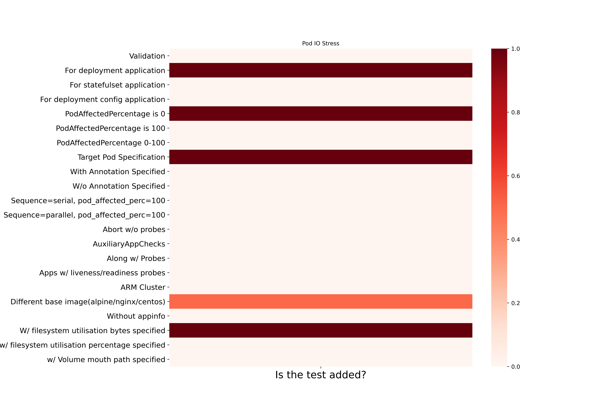
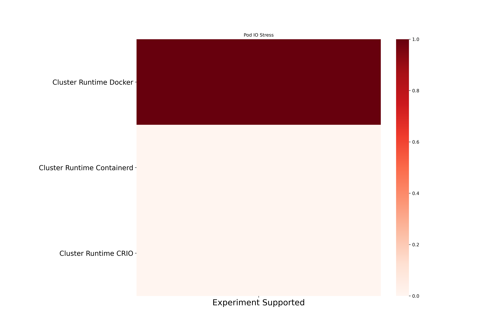
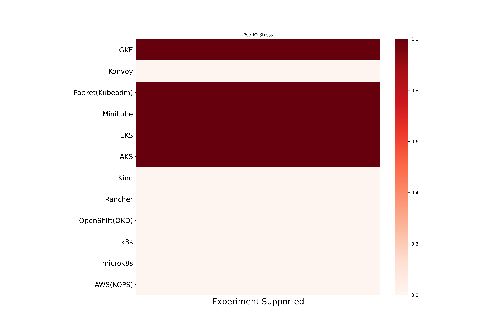

Pod IO Stress Chaos
Pod IO Stress inject IO stress on the application container. Here are the different coverage metrics for the experiment.
Pod IO Stress experiment based coverage

Pod IO Stress cluster runtime based coverage

Pod IO Stress platform based coverage
